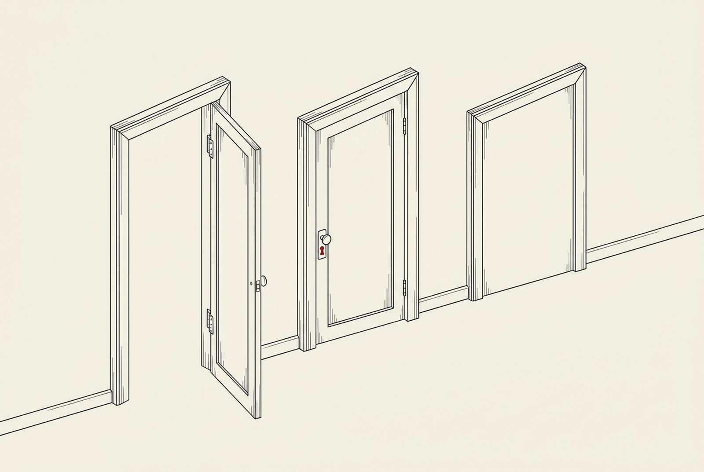
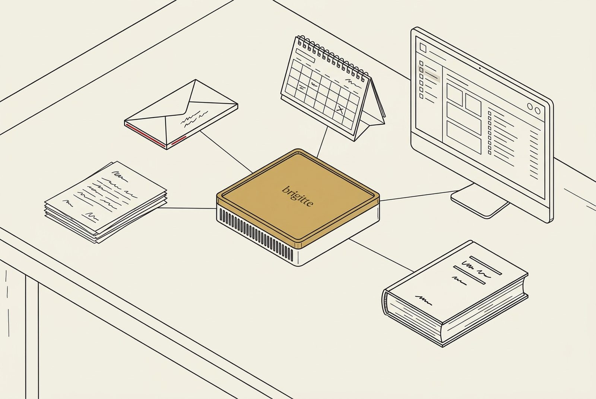

Standard — support par connexion chiffrée.
Pour chaque intervention de support, l'étude ouvre une connexion chiffrée, pour une tâche précise, puis la referme.
Technologie & mise en route
Brigitte associe une box dans vos locaux, les documents que vous choisissez et des fonctions adaptées au travail de votre étude. Notre équipe vient sur place pour l'installation et la prise en main.


Pour chaque intervention de support, l'étude ouvre une connexion chiffrée, pour une tâche précise, puis la referme.
Les documents et les données de travail sont conservés sur votre disque et traités localement, dans le cadre de sécurité de votre étude. Les interventions et les connexions sont définies avec votre responsable informatique.
Cette configuration doit être étudiée et validée avant engagement, notamment pour les fonctions disponibles, la maintenance et les mises à jour.
Une box accueille le travail convenu. Une seconde peut être prévue pour organiser la redondance, selon une configuration et une procédure de reprise à valider. La capacité sera confirmée par les essais sur le matériel livré et vos usages.
On écoute vos besoins et vos habitudes de travail, sans parler de prix.
Vos outils restent ; on étudie ensemble comment les relier à Brigitte.
Installation, formation, et un accompagnement pendant les premières semaines.
Puis on ajoute des modules, au fil du temps, selon vos besoins.
Le secret professionnel couvre les informations protégées reçues dans l'exercice de l'activité d'avocat et perdure après la fin du mandat (art. 13 LLCA ; art. 321 CP). La loi sur la protection des données (nLPD) s'applique directement à l'intelligence artificielle.
Brigitte est conçue pour respecter le secret professionnel et la nLPD. Aucun outil ne garantit à lui seul la conformité : c'est votre étude qui décide et qui reste responsable.
Par défaut, vos documents sont traités sur la box, dans votre étude.
Quel outil, sur quel dossier, dans quelles conditions ? Votre étude choisit ce qu'elle dépose et à quoi Brigitte se connecte.
La FSA décrit notamment une IA installée sur le réseau interne de l’étude, à condition que les données restent dans son infrastructure. Le traitement local de Brigitte peut s’inscrire dans cette approche selon les flux et accès vérifiés ; il ne suffit pas, à lui seul, à établir la conformité.
Votre client vous confie des informations qui appellent de la discrétion. Avec l’IA, une question reste essentielle : pourrez-vous lui expliquer où ses documents ont été traités, qui pouvait y accéder et quelles protections vous aviez mises en place ?
Brigitte traite les documents sur place, dans votre étude. Les connexions sont choisies et contrôlées par l’étude. Les accès, le support et les mesures de protection sont à définir selon votre configuration. Cette maîtrise technique aide à documenter vos pratiques ; elle ne remplace pas vos obligations professionnelles.
Dans ses lignes directrices adoptées le 14 juin 2024, la Fédération suisse des avocats cite l’installation d’une IA sur le réseau interne de l’étude parmi trois approches pour traiter des informations confidentielles. Elle décrit aussi une externalisation strictement encadrée et une voie fondée sur le consentement éclairé du client. Chaque configuration doit être examinée au regard des conditions applicables. Ces lignes directrices ne constituent pas une certification de Brigitte.
Oui. Le mandat comporte une obligation de rendre compte de sa gestion (art. 400 CO). Une personne physique peut aussi exercer son droit d’accès à ses données personnelles, dans les limites prévues par la LPD (art. 25 et 26). Cela ne signifie pas un accès automatique à tous vos contrats ou journaux techniques. C’est une raison de documenter dès aujourd’hui les outils utilisés, les accès autorisés et les protections choisies.
Comprendre l’IA · Sources : lignes directrices FSA · CO et LPD : droits et limites
« Local » veut dire une chose simple : la box reste chez vous, branchée sur le réseau de votre étude, dans vos locaux. Par défaut, les documents confiés à Brigitte sont stockés et analysés sur la box. Les éventuels accès de support et flux vers des services externes sont définis avec votre étude, selon la configuration convenue.
Brigitte s'ajoute aux outils de votre étude ; elle ne les remplace pas. Vous déposez vos documents, puis des connexions en lecture seule vers votre messagerie, votre partage de fichiers ou votre logiciel de gestion peuvent être activées, si vous le souhaitez.
L'envoi, la signature et la facturation restent faits par une personne de votre étude.
Brigitte ne vous demande pas de changer vos habitudes. C'est une méthode qui s'adapte à vous : elle s'installe autour de ce que vous faites déjà, et se connecte à vos outils à votre rythme, selon ce que vous choisissez d'activer.

La plateforme fédérale de communication électronique avec la justice arrive progressivement, canton par canton. Votre étude peut s'y préparer dès maintenant, sans stress.
La box en chiffres
Repère de capacité mémoire : 8 cartes graphiques de 16 Go cumulent 128 Go, répartis sur huit cartes séparées ; la Brigitte Box dispose de 128 Go de mémoire unifiée, partagée par tout le système. Les deux ne sont pas équivalents.
8 cartes séparées
Comparaison de capacité uniquement : elle ne dit rien de la vitesse ni du nombre d’utilisateurs. Pas une mesure de performance. Env. 100 Ko par page scannée, 0,1 mm par feuille ; hors système et sauvegardes. Tour Eiffel : 330 m
La mise en route
Pilote
Un pilote de six mois avec une petite équipe de votre étude, sur un périmètre défini ensemble, avec vos propres dossiers.